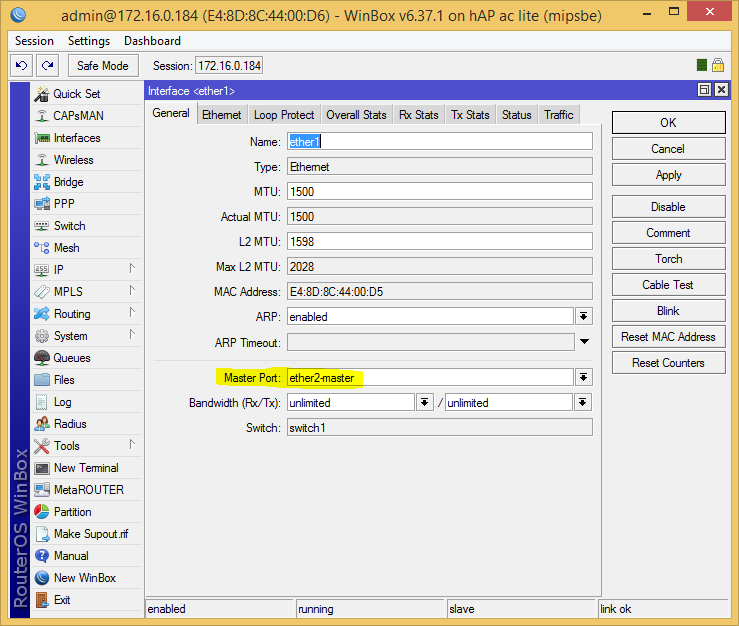
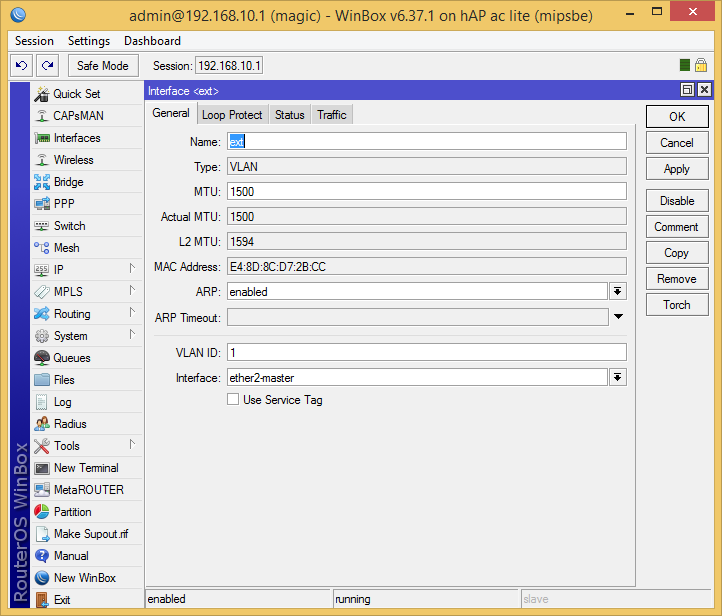
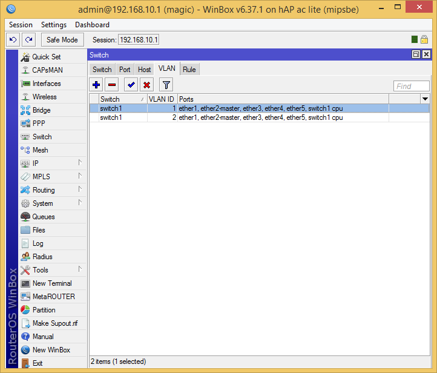
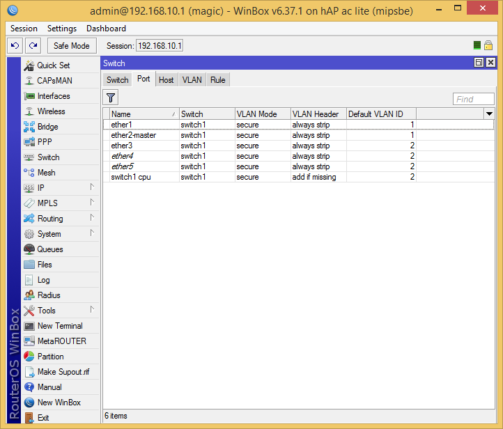

Mikrotik: маленькая хитрость switch chip
Моя прошлая статья про switch chip на Mikrotik вызвала неоднозначную реакцию, а комментарий одного из читателей натолкнул на идею. И так: как на RB952Ui-5ac2nD сделать более одной группы коммутации?
Обходим ограничение чипа Atheros8227
(думаю с другими можно аналогично)
Идея тут простая, спасибо Ivan_83 за идею (именно его комментарий — дал направление мысли).
Сформулируем проблему: есть домашний интернет с телевидением, но на приставку нужно дать кабель не после нашего NAT, а до него. Обычно провайдер предлагает маленький коммутатор до вашего роутера (какой кошмар, столько ненужных устройств!), или если роутер умеет, вы создаете на нем мост из двух портов, которые отдаете внешней сети (входящий кабель+приставка ТВ). Но, вышеозначенный Mikrotik не умеет две группы коммутации, и потому, приходится делать софтовый bridge (а хочется отдать это в «железо»).
Теперь реализация: объединим все порты в группу коммутации (выставим мастер порт):
/interface ethernet set ether1 master-port=ether2-master

Аналогично для всех остальных.
Теперь возьмем, и создадим два VLAN, один для внешней сети (к примеру VID:1), и для внутренней (VID:2):
/interface vlan
add interface=ether2-master \
name=ext vlan-id=1
add interface=ether2-master \
name=V_LAN vlan-id=2

Теперь создаем таблицу VLAN:
/interface ethernet switch vlan
add ports=ether1,ether2-master,ether3,ether4,ether5,switch1-cpu switch=switch1 vlan-id=1
add ports=ether1,ether2-master,ether3,ether4,ether5,switch1-cpu switch=switch1 vlan-id=2

И на чипе коммутации «объединим» порты с помощью VLAN. Все порты будут растегированны (кроме CPU), и VLAN по умолчанию будет тот, который соответствует назначению порта (для внешней сети 1, для внутренней 2):
/interface ethernet switch port
set ether1 default-vlan-id=1 vlan-header=always-strip vlan-mode=secure
set ether2-master default-vlan-id=1 vlan-header=always-strip vlan-mode=secure
set ether3 default-vlan-id=2 vlan-header=always-strip vlan-mode=secure
set ether4 default-vlan-id=2 vlan-header=always-strip vlan-mode=secure
set ether5 default-vlan-id=2 vlan-header=always-strip vlan-mode=secure
set switch1-cpu default-vlan-id=2 vlan-header=add-if-missing vlan-mode=secure

Все, теперь чип коммутации сделает нужную нам работу.